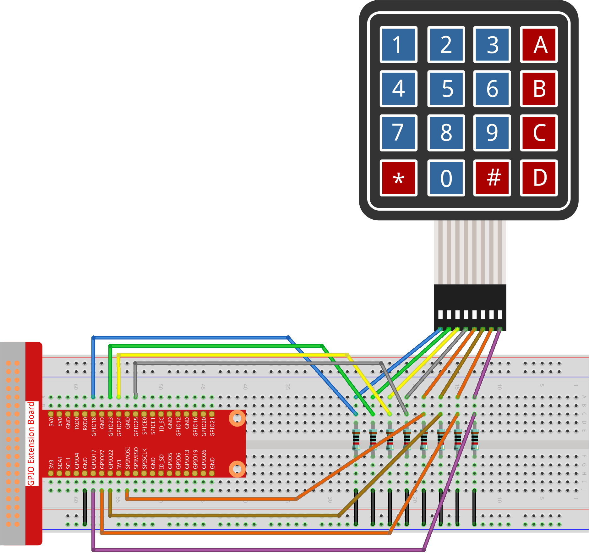

Bemerkung
Hallo und willkommen in der SunFounder Raspberry Pi & Arduino & ESP32 Enthusiasten-Gemeinschaft auf Facebook! Tauchen Sie tiefer ein in die Welt von Raspberry Pi, Arduino und ESP32 mit anderen Enthusiasten.
Warum beitreten?
Expertenunterstützung: Lösen Sie Nachverkaufsprobleme und technische Herausforderungen mit Hilfe unserer Gemeinschaft und unseres Teams.
Lernen & Teilen: Tauschen Sie Tipps und Anleitungen aus, um Ihre Fähigkeiten zu verbessern.
Exklusive Vorschauen: Erhalten Sie frühzeitigen Zugang zu neuen Produktankündigungen und exklusiven Einblicken.
Spezialrabatte: Genießen Sie exklusive Rabatte auf unsere neuesten Produkte.
Festliche Aktionen und Gewinnspiele: Nehmen Sie an Gewinnspielen und Feiertagsaktionen teil.
👉 Sind Sie bereit, mit uns zu erkunden und zu erschaffen? Klicken Sie auf [hier] und treten Sie heute bei!
2.1.5 Tastenfeld
Einführung
Ein Tastenfeld ist ein rechteckiges Array von Tasten. In diesem Projekt werden wir es verwenden, um Zeichen einzugeben.
Benötigte Komponenten
Für dieses Projekt benötigen wir die folgenden Komponenten.

Schaltplan


Experimentelle Verfahren
Schritt 1: Bauen Sie den Schaltkreis auf.
Schritt 2: Öffnen Sie die Code-Datei.
cd ~/davinci-kit-for-raspberry-pi/python-pi5
Schritt 3: Ausführen.
sudo python3 2.1.5_Keypad_zero.py
Nachdem der Code ausgeführt wurde, werden die Werte der gedrückten Tasten auf dem Tastenfeld (Tastenwert) auf dem Bildschirm angezeigt.
Warnung
Wenn die Fehlermeldung RuntimeError: Cannot determine SOC peripheral base address angezeigt wird, lesen Sie bitte Wenn gpiozero nicht funktioniert.
Code
Bemerkung
Sie können den unten stehenden Code Modifizieren/Zurücksetzen/Kopieren/Ausführen/Stoppen. Aber bevor Sie das tun, müssen Sie zum Quellcode-Pfad wie davinci-kit-for-raspberry-pi/python-pi5 gehen. Nachdem Sie den Code geändert haben, können Sie ihn direkt ausführen, um die Auswirkungen zu sehen.
#!/usr/bin/env python3
from gpiozero import DigitalOutputDevice, Button
from time import sleep
class Keypad:
def __init__(self, rows_pins, cols_pins, keys):
"""
Initialisieren Sie das Tastenfeld mit den angegebenen Reihen- und Spaltenpins sowie dem Tastenfeldlayout.
:param rows_pins: Liste der GPIO-Pins für die Reihen.
:param cols_pins: Liste der GPIO-Pins für die Spalten.
:param keys: Liste der Tasten im Tastenfeldlayout.
"""
# Initialisieren der Reihenpins als DigitalOutputDevice
self.rows = [DigitalOutputDevice(pin) for pin in rows_pins]
# Initialisieren der Spaltenpins als Buttons
self.cols = [Button(pin, pull_up=False) for pin in cols_pins]
self.keys = keys # Setzen des Tastenfeldlayouts
def read(self):
"""
Lesen Sie die derzeit gedrückten Tasten auf dem Tastenfeld.
:return: Eine Liste der gedrückten Tasten.
"""
pressed_keys = []
# Scannen Sie jede Reihe und Spalte, um gedrückte Tasten zu identifizieren
for i, row in enumerate(self.rows):
row.on() # Aktivieren Sie die aktuelle Reihe
for j, col in enumerate(self.cols):
if col.is_pressed: # Überprüfen Sie, ob die Spaltentaste gedrückt ist
# Berechnen Sie den Tastenindex basierend auf Reihe und Spalte
index = i * len(self.cols) + j
pressed_keys.append(self.keys[index])
row.off() # Deaktivieren Sie die aktuelle Reihe
return pressed_keys
try:
# Konfigurieren Sie Reihen, Spalten und Tastenfeldlayout
rows_pins = [18, 23, 24, 25]
cols_pins = [10, 22, 27, 17]
keys = ["1", "2", "3", "A",
"4", "5", "6", "B",
"7", "8", "9", "C",
"*", "0", "#", "D"]
# Erstellen Sie eine Instanz der Keypad-Klasse
keypad = Keypad(rows_pins, cols_pins, keys)
last_key_pressed = []
# Lesen Sie kontinuierlich das Tastenfeld und drucken Sie neu gedrückte Tasten
while True:
pressed_keys = keypad.read()
if pressed_keys and pressed_keys != last_key_pressed:
print(pressed_keys) # Drucken Sie die Liste der gedrückten Tasten
last_key_pressed = pressed_keys
sleep(0.1) # Kurze Verzögerung zur Reduzierung der CPU-Auslastung
except KeyboardInterrupt:
# Behandeln Sie eine Tastaturunterbrechung (Ctrl+C) für einen sauberen Ausstieg
pass
Code-Erklärung
Importiert die Klassen
DigitalOutputDeviceundButtonaus der Bibliothekgpiozeround die Funktionsleepfür Verzögerungen.#!/usr/bin/env python3 from gpiozero import DigitalOutputDevice, Button from time import sleep
Definiert die Klasse
Keypad. Die Methode__init__initialisiert das Tastenfeld mit den gegebenen Reihen- und Spaltenpins und Tasten. Die Methodereadscannt das Tastenfeld und gibt eine Liste der gedrückten Tasten zurück.class Keypad: def __init__(self, rows_pins, cols_pins, keys): """ Initialisieren Sie das Tastenfeld mit den angegebenen Reihen- und Spaltenpins sowie dem Tastenfeldlayout. :param rows_pins: Liste der GPIO-Pins für die Reihen. :param cols_pins: Liste der GPIO-Pins für die Spalten. :param keys: Liste der Tasten im Tastenfeldlayout. """ # Initialisieren der Reihenpins als DigitalOutputDevice self.rows = [DigitalOutputDevice(pin) for pin in rows_pins] # Initialisieren der Spaltenpins als Buttons self.cols = [Button(pin, pull_up=False) for pin in cols_pins] self.keys = keys # Setzen des Tastenfeldlayouts def read(self): """ Lesen Sie die derzeit gedrückten Tasten auf dem Tastenfeld. :return: Eine Liste der gedrückten Tasten. """ pressed_keys = [] # Scannen Sie jede Reihe und Spalte, um gedrückte Tasten zu identifizieren for i, row in enumerate(self.rows): row.on() # Aktivieren Sie die aktuelle Reihe for j, col in enumerate(self.cols): if col.is_pressed: # Überprüfen Sie, ob die Spaltentaste gedrückt ist # Berechnen Sie den Tastenindex basierend auf Reihe und Spalte index = i * len(self.cols) + j pressed_keys.append(self.keys[index]) row.off() # Deaktivieren Sie die aktuelle Reihe return pressed_keys
Richtet die GPIO-Pins für Reihen und Spalten ein und definiert das Tastenfeldlayout.
try: # Konfigurieren Sie Reihen, Spalten und Tastenfeldlayout rows_pins = [18, 23, 24, 25] cols_pins = [10, 22, 27, 17] keys = ["1", "2", "3", "A", "4", "5", "6", "B", "7", "8", "9", "C", "*", "0", "#", "D"]
Erstellt eine Instanz der
Keypad-Klasse mit der spezifizierten Konfiguration.try: ... # Erstellen Sie eine Instanz der Keypad-Klasse keypad = Keypad(rows_pins, cols_pins, keys) last_key_pressed = []
Liest kontinuierlich das Tastenfeld auf gedrückte Tasten, druckt Änderungen im Tastenzustand und führt eine kurze Verzögerung ein, um die CPU-Auslastung zu verringern. Fängt eine KeyboardInterrupt (wie Ctrl+C) ab, um einen eleganten Ausstieg aus dem Skript zu ermöglichen.
try: ... # Lesen Sie kontinuierlich das Tastenfeld und drucken Sie neu gedrückte Tasten while True: pressed_keys = keypad.read() if pressed_keys and pressed_keys != last_key_pressed: print(pressed_keys) # Drucken Sie die Liste der gedrückten Tasten last_key_pressed = pressed_keys sleep(0.1) # Kurze Verzögerung zur Reduzierung der CPU-Auslastung except KeyboardInterrupt: # Behandeln Sie eine Tastaturunterbrechung (Ctrl+C) für einen sauberen Ausstieg pass